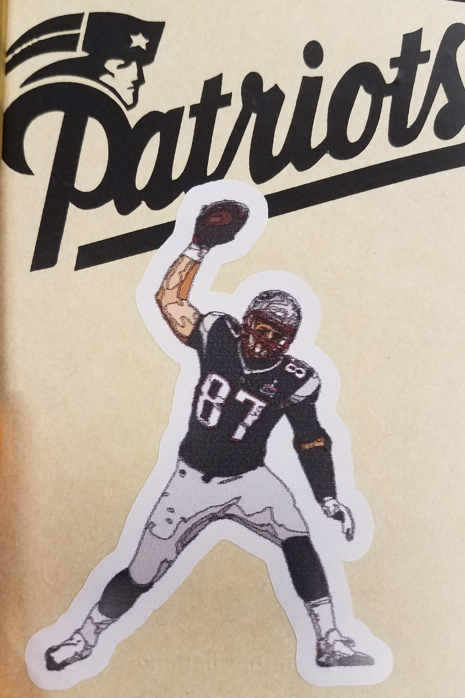
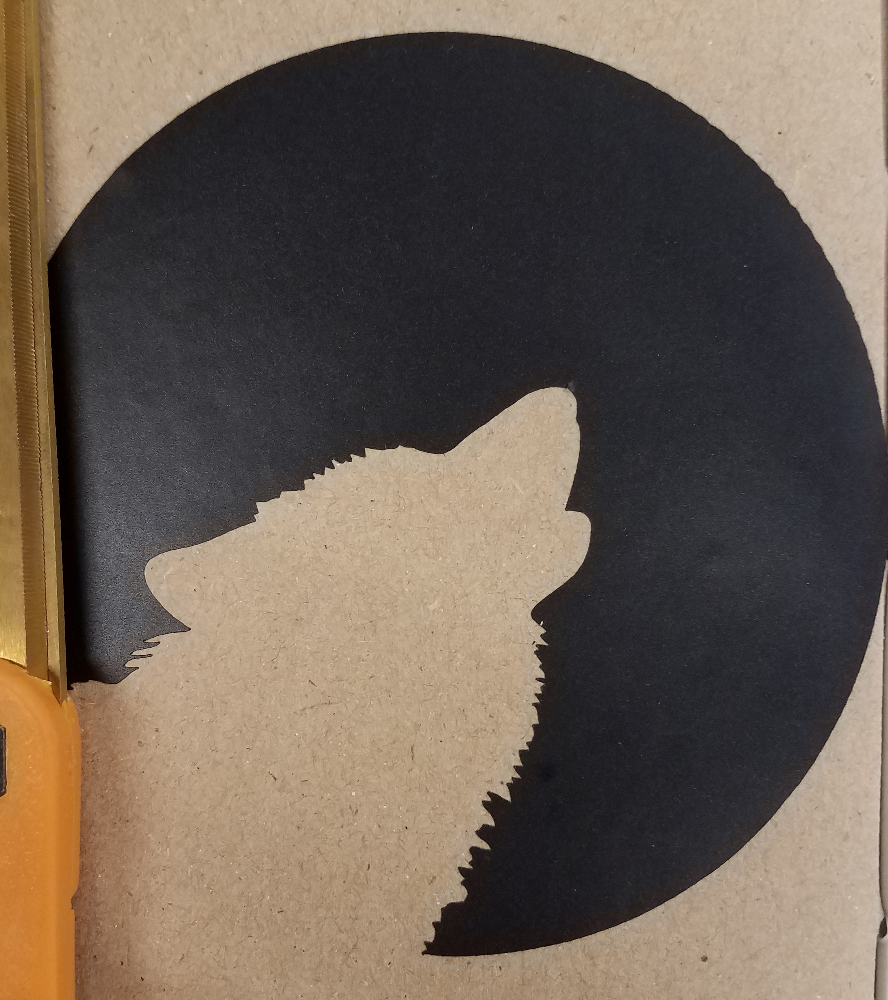
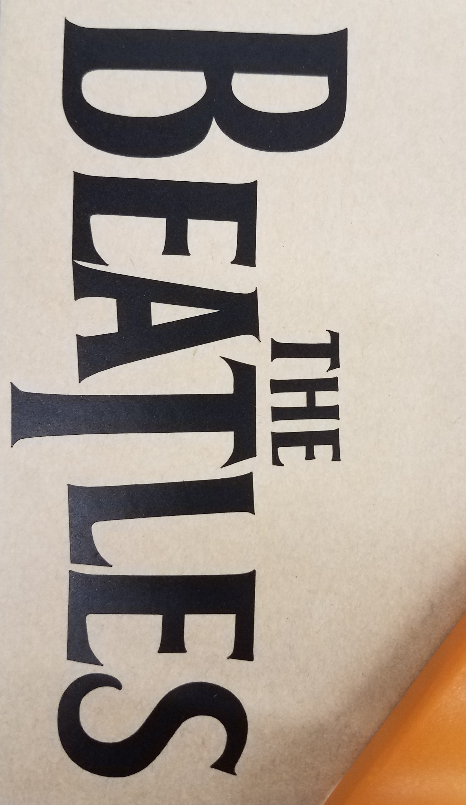
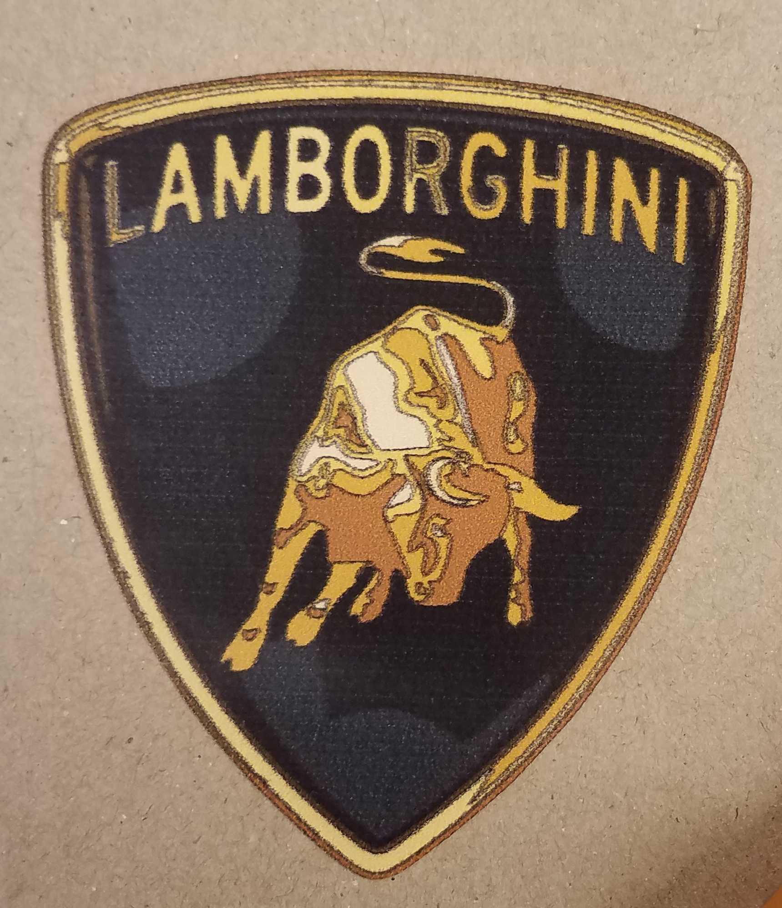

Patriots Sticker: The first sticker I chose to create was a patriots logo sticker. This is because I really like the Pats and because they are the best football team and possibly sports team to ever play. First, I found a logo I liked online, and then I saved it as a .jpg (see files below). I then uploaded it to CorelDraw and saved it as a .cdr. Finally, I used the GS-24 CAMM 1 vinyl cutter to cut out the logo on black vinyl.
Wolf Sticker: I chose to create a wolf sticker because they are undoubtedly the most bad-a** animal there is. Just like the patriots sticker, I found a fairly low detail picture of a wolf and converted it to a .cdr in CorelDraw. I then uploaded that file to the vinyl cutter and voila. Another sticker!
Beatles Sticker: The Beatles have to be my favorite band because their music is just all around good, which is why I chose to make a sticker for them. Because I couldn't make a sticker of them as it had to be one color, I chose their logo instead. I found a .jpg online that I liked and converted it to a .cdr. I then cut it on the printer and put it in my notebook.
  Reflection: I learned that althought the vinyl cutter can cut extremely detailed stickers, it is best if your image's edges are not super complex, as afterwards these complex edges can curl up or break off very easily, and it makes the sticker harder to stick to something the right way.
Files: Pats (.jpg), Wolf (.jpg), Beatles (.png), Single Color Stickers (.cdr)
Gronk Sticker: I chose to make a Gronkowski sticker because he is an idealic player and possibly the greatest TE of all time. If he can carry 3 guys and still score a TD, he deserves to be on my laptop/notebook. First, I found a picture of Gronk doing his legendary Gronk Spike. Then, because I only wanted a picture of Gronk and not the background, I uploaded the photo to Adobe Photoshop and removed the background with the lasso tool, and also cropped the image. I copied and pasted the image into CorelDraw and traced it as a detailed bitmap. I then contoured the picture witha 0.1 inch offest and set the contour color to the specific pink so that the printer would realize to cut on that line. I finally saved it as a .eps (the file type the 540i uses), uploaded it to the Roland 540i, changed the print material to the sticker vinyl, and pressed print. This sticker is really cool and turned out better than I thought it would.
Lambo Sticker: I wanted to make a Lambo sticker because the Lambo logo is really cool, and somebody else was already making a Ferrari symbol. I found a .png of the Lambo logo online so it did not have a background, and then I traced the logo's bitmap and contoured it with the specific pink in CorelDraw and exported it as a .eps. Using the Roland 540i, I printed and cut the sticker and it turned out like I had hoped.
Reflection: With the 540i, pretty much any amount of detail is possible, but stickers look better if they are a bit less complex. I learned that when tracing the stickers' bitmaps, the color option should be set to transparent or you will get the black lines on the inside like I did.
.jpg){kind=link}
{kind=link}
{kind=link}